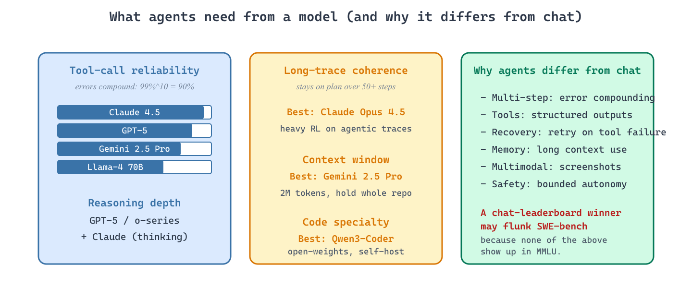

Agentic workloads put unusual pressure on models. They need strong function calling, instruction following over long traces, ability to recover from errors, and (for browser/code-use agents) multimodal grounding. The model recommendations differ from a generic chat workload.

30.5.1 Frontier models for agents (2026)
- Claude Opus 4.5 / Sonnet 4.5 (Anthropic, 2025-2026) are the current default for production coding and tool-using agents, leading SWE-bench Verified and most multi-step agentic benchmarks. Their objective is to deliver the highest tool-call reliability and long-horizon coherence among frontier models, which matters because agent failures compound: even 99% per-call accuracy fails 10% of 10-step traces. The core concept is heavy RL on agentic trajectories during training; the public tool-use API supports parallel calls, computer-use, and MCP natively. Pick Opus 4.5 for hardest tasks (long traces, code-base navigation), Sonnet 4.5 for cost-efficient production agents.
- GPT-5 and the o-series reasoning models (OpenAI, 2024-2025) are OpenAI's reasoning-first frontier, strong on tau-bench and other workflows where "think before acting" pays off. Their objective is to interleave chain-of-thought with tool calls so the agent reasons about the next action before emitting it, which matters when single-step heuristics fail on ambiguous user intent. The core concept is reasoning tokens (hidden chain-of-thought) plus structured tool calls in the Responses API. Pick GPT-5 / o3 when reasoning before action helps; for raw tool-call mechanics, Claude is currently more reliable.
- Gemini 2.5 Pro (Google DeepMind, 2025) is Google's frontier agent model, distinguished by a 2M-token context window that lets agents hold an entire codebase or document corpus in working memory. Its objective is to handle agentic workflows whose state is too large for repeated retrieval (debugging a 500-file monorepo, reviewing a multi-hundred-page contract), which matters when context-engineering is the bottleneck. Pick Gemini 2.5 Pro for long-context agents; for short-context coding, Claude Opus typically wins.
- Grok 4 (xAI, 2025) is xAI's frontier model, distinguished primarily by tight X (Twitter) integration that gives it real-time access to current social data. Its objective is to be the agent-of-choice when access to live social signals matters, which is a niche but real use case (trend analysis, real-time research). Pick Grok 4 when live X data is essential; for general agentic work, the other three are stronger.
30.5.2 Open-weights options
- Llama-4 Instruct (Meta, 2025) at 70B is the strongest open-weights generalist for agents, with native tool calling and reasonable function-call accuracy. Its objective for agent builders is to provide a self-hostable model approaching the frontier on simpler agent tasks, which matters when API cost or data-residency rules out closed models. Pick Llama-4 70B for self-hosted agents; expect to fine-tune for your specific tool catalog and avoid sizes under 8B where multi-step coherence collapses.
- Qwen3-Coder (Alibaba, 2025) is the code-specialized variant of Qwen3, fine-tuned on extensive code and tool-use traces. Its objective is to be the open-weights SWE-bench competitor, which matters when you want a code-focused model you can run on your own hardware. The core concept is heavy domain SFT plus RL on code-execution rewards. Pick Qwen3-Coder when your agent is code-focused and you cannot use proprietary APIs.
- DeepSeek-V3.1 and DeepSeek-R1 (DeepSeek, 2024-2025) is the cost-efficient open MoE frontier, popular in self-hosted agent stacks for its strong reasoning-per-dollar. Its objective is to provide near-frontier capability at a fraction of the inference cost via aggressive MoE sparsity, which matters when agent inference cost dominates. Pick for high-volume self-hosted agent workloads; expect to dedicate multi-node infrastructure to host it. DeepSeek-R1-Distill-Qwen-32B is the right pick when you want R1-style reasoning in an agent loop without the 671B-MoE infrastructure footprint, a popular 2025 efficiency pattern.
- Devstral (Mistral, 2025): Mistral's open code-agent model; the right pick when you want a Mistral-lineage code agent.
- DeepCoder (Agentica, 2025) and similar coding-RL fine-tunes are 14B-class open models trained with RL on coding rewards to specialize in software-engineering tasks. Their objective is to demonstrate that small task-specialized models can match much larger generalists on narrow agent tasks, which matters when you have one workflow that justifies a domain fine-tune. Pick a coding-RL fine-tune when your agent's domain is well-defined; for general agents, the frontier generalists are stronger.
30.5.3 Vision-language models for browser agents
Browser-using agents need to read screenshots, not just DOM. The relevant models:
- Claude with Computer Use (Anthropic, 2024) is the production default for screen-reading agents, with native pixel-level grounding for click and type actions. Its objective is to let Claude operate any GUI without an API by emitting mouse and keyboard actions from screenshots, which matters for automating legacy software. The core concept is the "computer" tool primitive that returns screenshots and accepts coordinate-based actions. Pick Claude Computer Use as the production default for GUI-controlling agents in 2026.
- ShowUI (Show Lab, 2024) is an open 2B-parameter vision-language model specialized for UI grounding (find this button, identify this input). Its objective is to provide an open alternative to Claude Computer Use for self-hosted browser agents, which matters when data-residency forbids sending screenshots to closed APIs. Pick ShowUI for self-hosted UI grounding; for end-to-end agentic capability, Claude Computer Use is still significantly stronger.
- Open VLMs: Qwen-VL and Llama-Vision are the larger open vision-language models adaptable to UI grounding via fine-tuning. Their objective is to be general-purpose VLMs you can specialize, which matters when you want one model for screen understanding plus other vision tasks. Pick when you need a general open VLM as the base for a custom screen-reading fine-tune.
The reference design that turns a screen-reading VLM into a working browser agent is WebVoyager (He et al., 2024). The agent loop has five stages, all wired together as nodes in a LangGraph state machine with one node per tool. Stage 1 (capture): drive a headless Chrome instance via Playwright, screenshot the page, and pull the accessibility tree using the W3C ARIA standard. Stage 2 (annotate): for every actionable ARIA element (button, link, input), overlay a numbered coloured bounding box on the screenshot and emit a parallel list of {id, role, accessible_name} tuples. Stage 3 (predict): send both the annotated image and the textual element list to the VLM with a prompt that asks for the next action as Action[id, value], where the id refers to one of the numbered boxes. Stage 4 (parse and dispatch): parse the model's output into one of a small set of typed tool nodes (click(id), type(id, text), scroll(direction), go_back(), answer(text)), each implemented as a Playwright call. Stage 5 (scratchpad): append the action and the resulting new screenshot to a scratchpad that limits context growth (typically keep only the last three screenshots; older actions become text-only summaries). The conditional edge routes from "parse" back into "capture" until the model emits answer. The screenshot-annotation step is what makes the loop reliable: without numbered boxes the VLM has to write pixel coordinates and miscounts; with them the action space collapses to picking an integer.
30.5.4 Comparing the models
| Model | Best for | SWE-bench Verified | Access |
|---|---|---|---|
| Claude Opus 4.5 | Coding agents, long traces | ~70-75% | API only |
| Claude Sonnet 4.5 | Cost-efficient agents | ~55-65% | API only |
| GPT-5 / o3 | Reasoning-heavy agents | ~60-70% | API only |
| Gemini 2.5 Pro | Long-context agents | ~50-60% | API only |
| Llama-4 70B | Self-hosted agents | ~30-45% | Open weights |
Most short-trace agent failures trace back to a single bad tool call: wrong arguments, missing field, wrong tool entirely. Per-call function-calling accuracy is more predictive of agent success than raw IQ; Claude and GPT-5 lead this metric as of mid-2026; open-weights models trail by 5 to 20 points. Long-trace agent failures have a different root cause: context fidelity degrades as the trace grows past 50K tokens, with the model forgetting or contradicting earlier tool results. Claude's 1M context with high-fidelity retrieval and o3's reasoning-tracing are the current leaders on long-trace fidelity. Plan capacity tests for both metrics before locking in an agent model.
"Sample multiple traces, pick the best with a verifier" (best-of-N at the agent step level) is a production technique that lifts capability without retraining. Combined with self-consistency voting and external verifiers (test-suite pass, parse success, retrieval-confidence score), test-time scaffolding extends the capability of mid-tier models into flagship territory at a roughly proportional cost increase. The 2025 frontier reasoning models do this internally; for agents on smaller bases, you implement it yourself.
What's Next?
In the next section, Section 30.6: External Reading & Communities, we build on the material covered here.